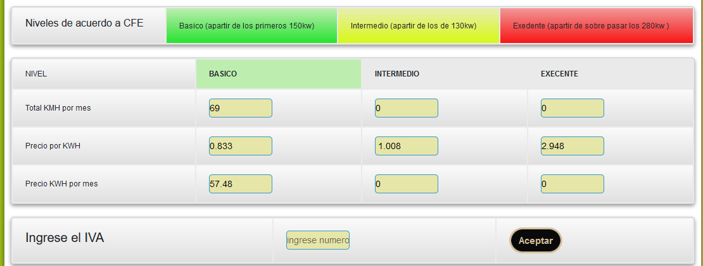
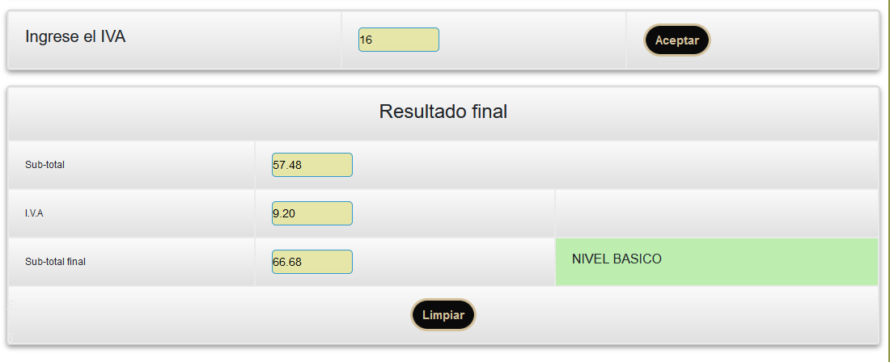

Esta aplicación permite realizar un cálculo de consumo de los que positivos electrónicos que utilizas en tu día a día ya sea por mes, día o semana. Por el momento solo permite realizarla operación en el servicio doméstico.
Para obtener el aproximado apagar del recibo de luz, tiene que ingresar un promedio de 60 días (recuerda que el recibo de luz llega cada dos meses)
Primero se ingresan los datos del equipo electrónico
Tipo de equipo: aquí se ingresa el nombre del aparato electrónico.
Consumo en watts: aquí se ingresa el consumo del equipo (por lo general viene en la etiqueta del
aparato
electrónico).
Cantidad de equipos: aquí se ingresa el número de equipos electrónico con el mismo nombre.
Horas de consumo: aquí se ingresan las horas en que el aparato se encuentra encendido.
Cuantos días lo utilizas: aquí se ingresan la cantidad de días que se utiliza el equipo electrónico
(por
ejemplo, una televisión se utiliza diario y el recibo de luz llega cada dos meses entonces se tiene que
ingresar 60 días).
Una vez ingresados los equipos a calcular te aparecerá una lista de tus equipos electrónicos con el cálculo en watts día, kilowatts día y kilowatts mes como se muestra en la siguiente imagen. y solamente sola mente tienes que presionar calcular
Ahora tienes que ingresar los precios de lista de acuerdo a tu servicio y dar en aceptar (esto lo puedes encontrar en tu recibo, o en el siguiente link:)
Pagina oficial de la comisión federal de electricidad (CFE).Ahora ya podrás ver el consumo energético de tus equipos y el aproximado del costo a pagar, como podrás observar en la imagen la tabla representa los niveles de consumo y el total de kilowatts por mes, precio por kilowatts y precio por kilowatts por mes
Por ultimo solo tienes que ingresar el IVA de que cobra la comisión federal de electricidad y presionar en aceptar, como se puede observar en la imagen tenemos el sub total a pagar, el iva, total a pagar y el nivel que de consumo energético
